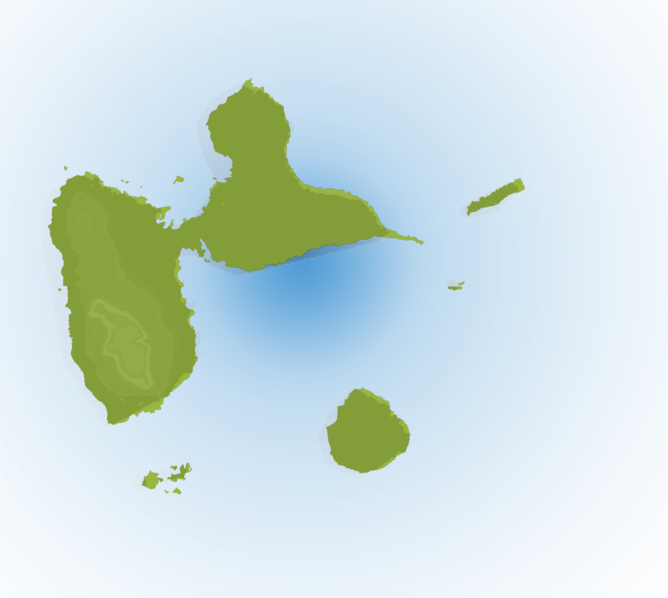

Bienvenue chez toi, mets les pieds sous la table.
Ya pas grand chose pour le moment, mais ça arrive!
 Altera sententia est, quae definit amicitiam paribus officiis ac voluntatibus. Hoc quidem est nimis exigue et exiliter ad calculos vocare amicitiam, ut par sit ratio acceptorum et datorum. Divitior mihi et affluentior videtur esse vera amicitia nec observare restricte, ne plus reddat quam acceperit; neque enim verendum est, ne quid excidat, aut ne quid in terram defluat, aut ne plus aequo quid in amicitiam congeratur.
Fuerit toto in consulatu sine provincia, cui fuerit, antequam designatus est, et, quod sortitus sis, non habere. Proficiscetur paludatus? Quo? Quo pervenire ante certam diem non licebit. ianuario, Februario, provinciam non habebit; Kalendis ei denique Martiis nascetur repente provincia.
Sed cautela nimia in peiores haeserat plagas, ut narrabimus postea, aemulis consarcinantibus insidias graves apud Constantium, cetera medium principem sed siquid auribus eius huius modi quivis infudisset ignotus, acerbum et inplacabilem et in hoc causarum titulo dissimilem sui.
Mensarum enim voragines et varias voluptatum inlecebras, ne longius progrediar, praetermitto illuc transiturus quod quidam per ampla spatia urbis subversasque silices sine periculi metu properantes equos velut publicos signatis quod dicitur calceis agitant, familiarium agmina tamquam praedatorios globos post terga trahentes ne Sannione quidem, ut ait comicus, domi relicto. quos imitatae matronae complures opertis capitibus et basternis per latera civitatis cuncta discurrunt.
Anh Pati
Direction les bordures!Direction les apparences dynamiques!